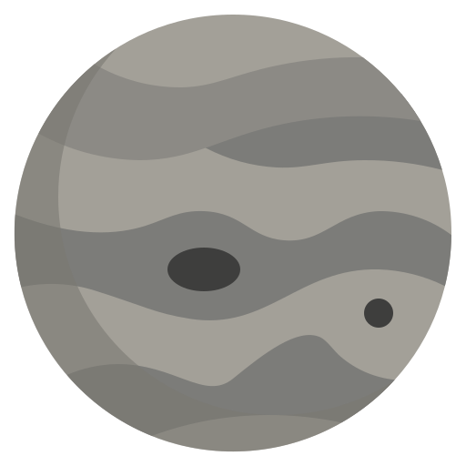

We decided we can start by selling the right tool to explore the space right from where you are, with the right equipment you can dicover and know more about this vast universe just like any astronomer and the more you buy the more you'll get a chance to meet one , the world is gonna be your play-gorund.
Keep looking Up
Niel Degrasse Tyson.
Telescopes
What can't be seen by the eye can be seen by the tools we have, NOW! you can see the world in a new perspictive with the multi-zoom telescope we have.
Light Sensors
Added to the telescope, You can see the faint light and detect unreachable planets and stars, now you can detect the faintest light with a slight beeb sound.
Heat Sensors
Time to broaden our spectrum, now you can see the second universe, Just by using this tool you will find a diffrent view of this world and all what's inside it.
Maginfying lens
Why stick to the close glaxies when you can see further into the abyss, this Maginfying lens can see the rogue stars.

Solar System Model
What you know about our solar system is good but never enough, with the model you will see the planets and the sun 1:1 scale, the dwarf planets and the rocky belt in between, know your world before you go exploring, curiosity begins here
Astronomical Maps
A full detailed map of our beloved milky way galaxy and what secrets lies within it, now you will know how big this world is and how tiny we are.
Choose a pricing plan that fits your needs.
.png) The Sun (sol)
The Sun (sol)
the star at the center of the Solar System. It is a nearly perfect ball of hot plasma, heated to incandescence by nuclear fusion reactions in its core. The Sun radiates this energy mainly as light, ultraviolet, and infrared radiation, and is the most important source of energy for life on Earth.

 Earth (terra)
Earth (terra)
the third planet from the Sun and the only astronomical object known to harbor life. While large volumes of water can be found throughout the Solar System, only Earth sustains liquid surface water. About 71% of Earth's surface is made up of the ocean, dwarfing Earth's polar ice, lakes, and rivers.
 The moon (luna)
The moon (luna)
is Earth's only natural satellite. It is the fifth largest satellite in the Solar System ,with a diameter about one-quarter that of Earth.The Moon is a planetary-mass object with a differentiated rocky body, making it a satellite planet under the geophysical definitions of the term and larger than all known dwarf planets of the Solar System. It lacks any significant atmosphere, hydrosphere, or magnetic field.
 Mercury
Mercury
The smallest planet in our solar system and nearest to the Sun, Mercury is only slightly larger than Earth's Moon. From the surface of Mercury, the Sun would appear more than three times as large as it does when viewed from Earth, and the sunlight would be as much as seven times brighter. Despite its proximity to the Sun, Mercury is not the hottest planet in our solar system that title belongs to nearby Venus, thanks to its dense atmosphere.
 Venus
Venus
Venus is the second planet from the Sun and is Earth's closest planetary neighbor. It's one of the four inner, terrestrial (or rocky) planets, and it's often called Earth's twin because it's similar in size and density. These are not identical twins, however there are radical differences between the two worlds. Venus has a thick, toxic atmosphere filled with carbon dioxide and thick, yellowish clouds of sulfuric acid that trap heat.
 Mars
Mars
Mars is the fourth planet from the Sun and the second-smallest planet in the Solar System, only being larger than Mercury. In the English language, Mars is named for the Roman god of war. Mars is a terrestrial planet with a thin atmosphere (less than 1% that of Earth's), and has a crust primarily composed of elements similar to Earth's crust, as well as a core made of iron and nickel. Mars has surface features such as impact craters and polar ice caps.
 Jupiter
Jupiter
Jupiter is the fifth planet from the Sun and the largest in the Solar System.
It is a gas giant with a mass more than two and a half times that of all the other planets in the Solar System combined,
but slightly less than one-thousandth the mass of the Sun.
fun fact: jupiter protects us from astroids
 Saturn
Saturn
Saturn is the sixth planet from the Sun and the second-largest in the Solar System, after Jupiter. It is a gas giant with an average radius of about nine and a half times that of Earth. It has only one-eighth the average density of Earth; however, with its larger volume, Saturn is over 95 times more massive.

 Uranus
Uranus
Uranus is the seventh planet from the Sun. Its name is a reference to the Greek god of the sky, Uranus, who, according to Greek mythology, was the great-grandfather of Ares, grandfather of Zeus and father of Cronus. It has the third-largest planetary radius and fourth-largest planetary mass in the Solar System.

 Neptune
Neptune
Neptune is the eighth planet from the Sun and the farthest known planet in the Solar System. It is the fourth-largest planet in the Solar System by diameter, the third-most-massive planet, and the densest giant planet. It is 17 times the mass of Earth.

Pluto
Pluto is a dwarf planet in the Kuiper belt, a ring of bodies beyond the orbit of Neptune. It is the ninth-largest and tenth-most-massive known object to directly orbit the Sun. It is the largest known trans-Neptunian object by volume, by a small margin, but is slightly less massive than Eris.
 Eris
Eris
Eris is the most massive and second-largest known dwarf planet in the Solar System. It is a trans-Neptunian object in the scattered disk and has a high-eccentricity orbit. Eris was discovered in January 2005 by a Palomar Observatory based team led by Mike Brown and verified later that year.
 Astronomica
Astronomica The Sensors
The Sensors The Maps and models
The Maps and models